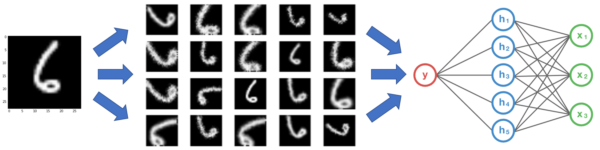
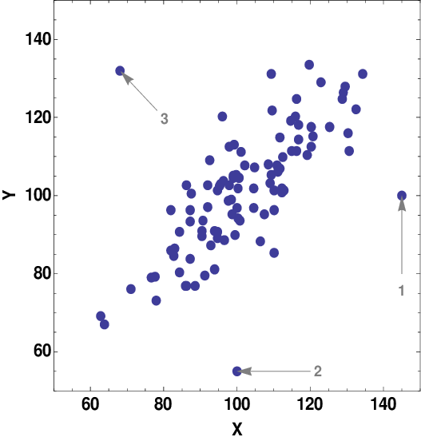
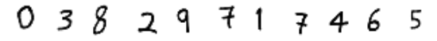
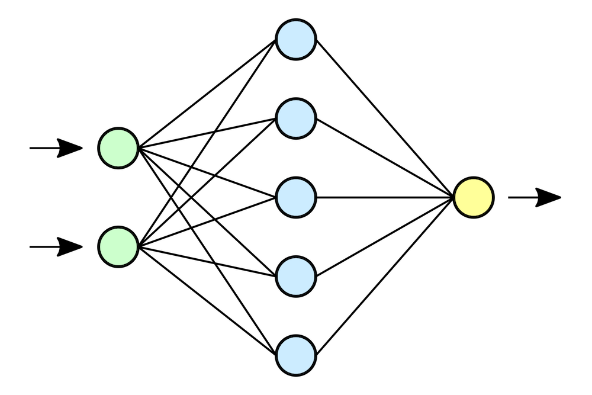
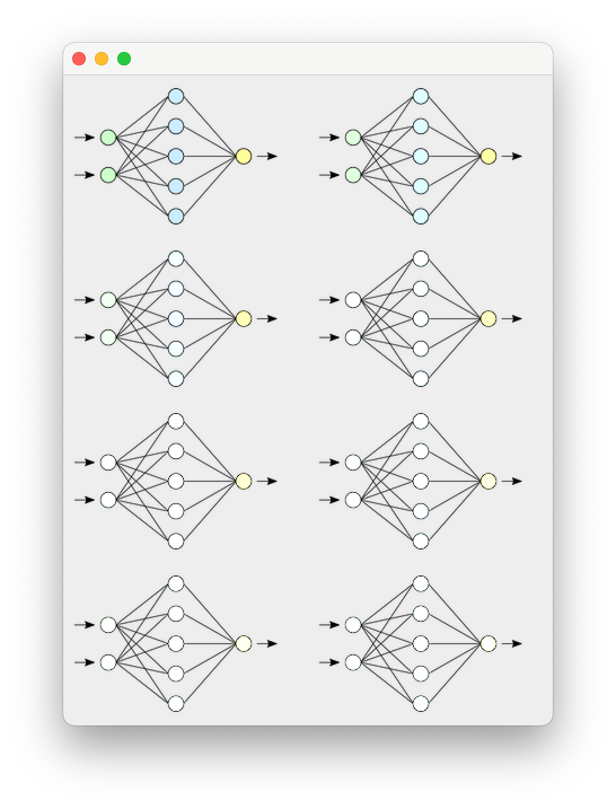
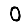
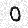
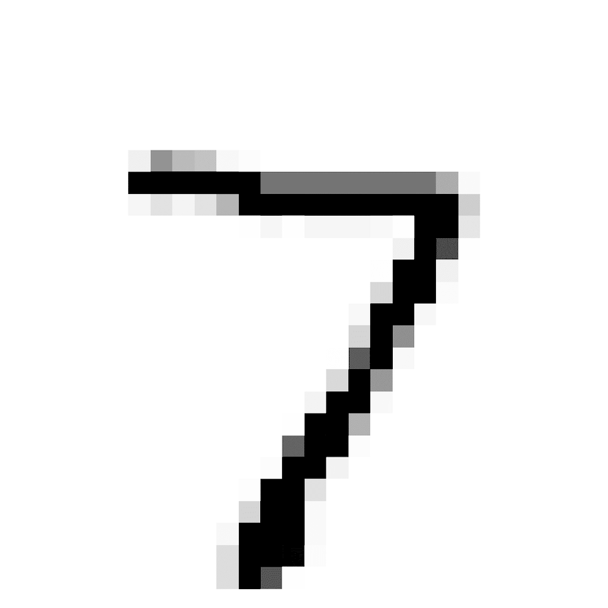
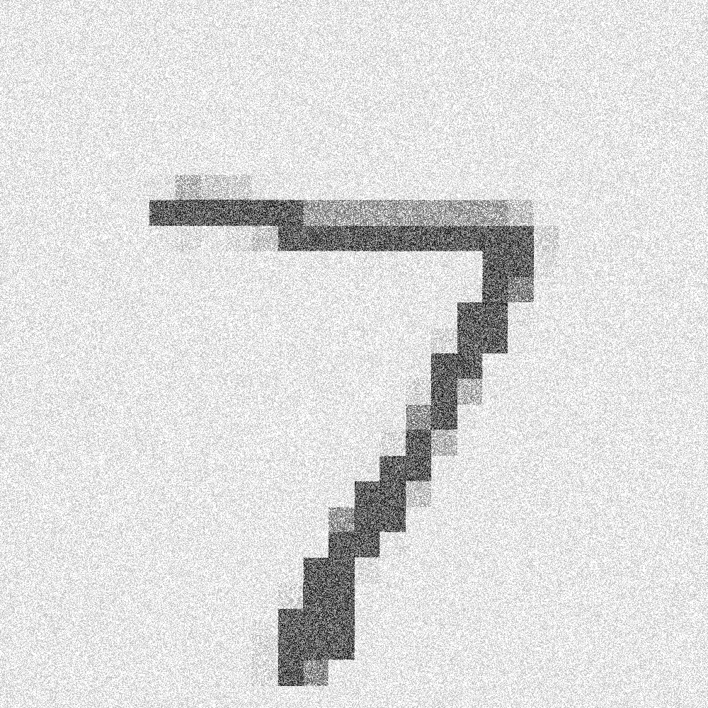

Chapter 7 - Data Preprocessing & Augmentation
“Time you enjoy wasting is not wasted time.”
— Phrynette Married by Marthe Troly-Curtin
Image Preprocessing
This section will be dedicated to image preprocessing mainly, while another section will talk about data (numerical and text-based) preprocessing; and image and data augmentation. I mainly focus on image-based preprocessing and augmentation because preprocessing and augmentation is most commonly applied to images. Afterwards, I will outline various techniques used and provide code examples. Let’s start!
First of all, image preprocessing defines the process to which an image is processed and modified before use in the future. On the other hand, image processing instead just refers to the broader subject of processing/modifying an image. Image processing is separated into two categories: digital image processing and analogue image processing. Analog image processing refers to processing applied to analog signals (i.e., light or sound. Analog signals are continuous and appear in the real world). This processing is usually done through a camera lens, which focuses light onto a sensor that converts the light (a continuous analog signal) into an image (a non-continuous [images are encoded in a finite number of pixels, which approximates the scene which was taken] digital signal). Notice that at this stage, various processing techniques are also available (and thus called analog image processing): you can adjust multiple different parts of the camera like the aperture size or focal length, which results in changes to the image (i.e., perspective, distortion). We won’t focus on analog image processing techniques in this book, but rather on digital image processing techniques. Digital processing techniques are performed through the manipulation of images, which is done using various algorithms. The aim of this process is to enhance images (or particular features in an image) through the removal/lightening of image noise and distortions. It is performed before feeding a model the input data, and can be performed on both training and testing data. It is useful because it can help artificial intelligence models learn better (reach a higher accuracy in a smaller number of training epochs) as data is better represented and noise or irrelevant parts in data are removed. Preprocessing images can therefore also reduce the likelihood of overfitting and consequences from underfitting (i.e., accuracy may be affected less by underfitting). Models can also be trained more quickly with the help of image preprocessing techniques. For example, by resizing all data to a smaller length, computational time would decrease as a whole, and the network itself will have a smaller input size, which makes patterns in data more obvious. Digital image processing is also useful for training with neural networks as neural networks require input data to be of the same size. E.g., images cannot have different sizes, so a preprocessing technique (resizing) would have be applied to make the input images of identical sizes. Some examples of digital image processing techniques include: resizing/dilation, orientation, coloring (i.e., through contrast, filters, greyscale adjustments), and deskewing (opposite of skewing, which is a technique used in data augmentation).
Image Data Augmentation
Image data augmentation is a process undertaken to increase the size of image datasets through the use of various augmentation techniques. These techniques often manipulate various properties present in an image to create similar images which can be used to train networks. Augmenting datasets is useful as models learn better with more variance in data (example), which can help prevent model underfitting and overfitting. Data augmentation is performed on data before training and is usually only applied to the training dataset.
Figure 7-1: An example of how image data can be augmented.
Some common augmentation techniques include rotating, skewing (slanting), translating and resizing images. Sometimes, datasets can also be augmented through the adjustment of the brightness (or even opacity/transparency) of an image.
If we can augment data, what is the point of caching or collecting large quantities of data? Why can’t we just augment a small subset of data to create practical and usable datasets? The main reason why data augmentation cannot completely substitute original (or ‘real’) data is because augmented data cannot possibly attempt to account for every possible scenario (or set of data) that a model may encounter.
I also want to emphasize the difference between preprocessing and augmentation. Augmentation is applied before the training stage with a purpose to increase dataset size. Preprocessing is applied during the training stage with a purpose of removing irrelevant data (or features) that may interfere with the network’s ability to generalize.
Graphics2D
library to perform transformations to images. You can see some examples in later sections that demonstrate how these libraries can be utilized for data augmentation.Furthermore, I have created a Kaggle dataset (that is also available on Github) of handwritten images (not in MNIST) that uses image data augmentation. The techniques I used and the complete source code will also be disclosed in the code examples section.
Image Preprocessing and Image Data Augmentation Techniques
Both image preprocessing and image data augmentation (for images) use similar techniques. Below is a list of techniques, when to use them, and precautions:
- Resizing
Usually this refers to the stretching or shrinking of an image. This technique seems surprisingly simple, but there still are different options within this single processing technique. You can resize image data directly or add blank pixels around an image to resize the overall image. Also, images can be ‘cropped’, which is also a form of resizing. Shrinking large images is often better than stretching small images when training networks on image data. Image resizing can occur during both preprocessing and data augmenting stages. - Rotation
Rotation refers to a transformation where an object is rotated in a certain direction (clockwise or anti-clockwise/counter-clockwise) by a certain number of degrees. In data augmentation, rotation is used to make slight changes to an image in order to expand a dataset. This requires that the image data is allowed to be rotated. For example, handwritten digits. - Greyscale conversion
A greyscale conversion converts an image from a range of colors into a range of blacks and whites. This is usually done to reduce the dimensionality of data features (by reducing information about the image such as color). Greyscaling images is usually done as a data preprocessing technique as it helps improve model performance (through the removal of possible noise and irrelevant features). Note that it may sometimes not be a good idea to remove color from images as it may help models identify various features in a dataset. For example, in classification tasks like object classification or animal classification (e.g., cats and tigers look similar but can be distinguished through the color of their fur [usually, although sometimes cat fur may be orange]). - Reflection
Reflection is a transformation where an object is reflected across an axis such that its mirror image and the original image is perfectly equidistant to the axis of reflection. This technique is useful in data augmentation as it can help increase dataset size whilst still creating relevant new data examples for a machine learning model to train on. - Exposure
This technique adjusts the brightness of images. It is mainly used in data augmentation to enlarge a dataset, although it can be used as a data preprocessing technique (e.g., identifying the brightness of an image and adjusting it so that model performance is improved). - Adding Noise
This technique adds noise into images in the form of black or white pixels. Although this may seem to be an odd processing technique, it can help prevent the model identifies patterns in irrelevant features in images, and thus overfitting as a whole. - Skewing
This is a technique used to ‘center’ images that are slanted. This process can be done on multiple occasions (e.g., turning a parallelogram into a rectangle involves skewing) and is useful during the image preprocessing stage as it can help make images more similar to ones a model is trained to recognize (e.g., slanted handwritten digits can be made vertically straight and centered, which may improve the model’s confidence on its prediction/classification result). Skewing can also be used to augment datasets as well.
Other Mediums of Data Augmentation
Datasets that don’t contain images can also be augmented before use. For example, in numerical datasets, input-output pairs can be slightly adjusted to create different data points (i.e., adding or subtracting minuscule values from input values or output values). I won’t cover these extensively as usually numerical datasets are rather abundant and contain extensive amounts of data, and don’t need to be augmented.
Other Mediums of Data Preprocessing
Data preprocessing may be needed for other forms of data, like numerical data. A common approach to data preprocessing is something called feature removal. Primarily, feature removal aims to remove features in datasets that may not be relevant to the use case. For example, given that the aim of a program is to predict the weather tomorrow given today’s weather data, information like the name of the weather station that recorded the data would be unnecessary. It might even hinder the network’s generalization abilities as the network might associate certain beliefs with certain weather station names, which is clearly unrelated to how the weather might be.
Another common approach is called outlier removal, which basically removes various data points that don’t have any outlying correlation with the use case itself, and may affect the accuracy of a network.
Figure 7-2: Outliers in numerical data. Notice how points marked ‘1’, ‘2’, and ‘3’ have no underlying correlation with the general group of points.
Outliers are often recorded due to real-world measurement errors. For example, the weather station may have recorded temperatures 10°C higher than normal because of some reported fault in the measuring instrument.
You might think that there only exists two forms of data: numerical and image-based, but that isn’t true! For example, audio is also a form of data which can be used by networks. A common example of where audio data is used is in voice and speech recognition. A form of preprocessing for audio would be to reduce sampling range (the frequency of samples in a unit length of time) to increase network training speed. We can also make a spectrogram, which visualizes audio as images plotted based on frequencies recorded in the audio file.

Figure 7-3: A spectrogram.
We can then use this image as an input to the network instead of all the values from the audio file.
Code Examples
Now, I’ll show you some programming examples that perform image data augmentation and image preprocessing.
Task 1
Given a user inputed handwritten digit, output a series of images that are similar to it. Achieve this by applying various data augmentation techniques like skewing and adjusting exposure.
01 import javax.imageio.ImageIO;
02 import java.awt.*;
03 import java.awt.image.BufferedImage;
04 import java.io.File;
05 import java.io.IOException;
06
07 public class DataAugment {
08 public static void main(String[] args) throws IOException {
09 int counter = 1;
10 BufferedImage image = ImageIO.read(new File("src/digit.png"));
11 for (double i = -0.2; i <= 0.2; i += 0.05) {
12 for (double j = -0.2; j <= 0.2; j += 0.05) {
13 BufferedImage output = new BufferedImage(28, 28, BufferedImage.TYPE_INT_ARGB);
14 Graphics2D graphics2D = output.createGraphics();
15 graphics2D.shear(i, j);
16 graphics2D.drawImage(image, 0, 0, null);
17
18 File outFile = new File("output-images/output" + counter + ".png");
19 ImageIO.write(output, "png", outFile);
20 counter++;
21 }
22 }
23 }
24 }
"src/digit.png"
on Line 10 should be replaced with the absolute path of the actual input test image.Code explanation:
i
andj
adjust the amount of x-shearing and y-shearing. Shearing/skewing basically tilts an image (that is rectangular) by a certain angle, to create another image (which now is technically a parallelogram). Line 13: Create another object to store the output image, which is later written into an output file. Line 14: Create a graphics object. It is used to perform the shearing transformation. Line 15: Set the transformation to shear by a certain amount. Note that this function call appears before we draw an image, because we are technically setting a configuration such that painting operations (likedrawImage()
) that follow have the transformation applied to it. Line 16: Draw the original image, but perform the previously set shearing transformation on it. Line 18: Create a file object that stores the output file's path. We use the counter here so that each file is named 'output1', 'output2', and so forth. Note that we store these files in another folder called ‘output-images’. The output folder must exist before running the program. Line 19: Write the image into the file in the PNG format. Line 20: Increment the counter (which stores which file is currently being written into).I’ve actually created a dataset of handwritten images that accomplishes this task as well. You can find the repository here. I decided to use Javascript so that users could make their own dataset online via a webpage, although the fundamental mechanics of the above program and the JS version are almost identical. In fact, I basically just translated the augmentation loop into Java and made it fit for this book.
Figure 7-4: Some sample outputs of the JS version of the program above.
The only difference between the program above and my original dataset creator is that the original JS version took image data augmentation even further, being able to provide approximately 3,000 different images given a single input image through the use of skewing techniques.
Task 2
Adjust the brightness of images to augment a dataset. Note that this also applies for preprocessing images.
Note that this task can be accomplished in many ways, so I’ll just show one that I find most efficient and readable. I’ll just give a short explanation on the program this time, as it uses quite a lot of native libraries for programming the Graphical User Interface.
01 import javax.imageio.ImageIO;
02 import javax.swing.*;
03 import java.awt.*;
04 import java.awt.image.BufferedImage;
05 import java.awt.image.RescaleOp;
06 import java.io.File;
07 import java.io.IOException;
08
09 public class Brighten {
10 public static void main(String[] args) throws IOException {
11 JLabel[] images = new JLabel[8];
12 BufferedImage image = ImageIO.read(new File("src/digit.png"));
13 images[0] = new JLabel();
14 images[0].setIcon(new ImageIcon(image));
15 for (int i = 1; i < 8; i++) {
16 RescaleOp op = new RescaleOp(1.0f + i * 0.1f, 0.0f, null);
17 BufferedImage temp = op.filter(image, null);
18 images[i] = new JLabel();
19 images[i].setIcon(new ImageIcon(temp));
20 }
21 JFrame frame = new JFrame();
22 frame.setDefaultCloseOperation(JFrame.EXIT_ON_CLOSE);
23 JPanel panel = new JPanel(new GridLayout(4, 2));
24 for (JLabel img : images) {
25 panel.add(img);
26 }
27 frame.setSize(400, 400);
28 frame.add(panel);
29 frame.setVisible(true);
30 }
31 }
Instead of just modifying an image’s brightness once and outputting its result to a file, this program modifies the image 7 times (not including the original image) with each image varying in brightness by 10%. The resulting 8 images (including the original) are then added to a panel and displayed visually. Below is a comparison of an example input and output of the program:
Figure 7-5: An example input to a program that modifies image brightness.
Figure 7-6: An example output to a program that modifies image brightness.
Notice how each image varies slightly from each other, but are all still discernible as a neural network diagram. Adjusting brightness/exposure changes how bright colors are, so pixels that are black will remain black and pixels that are white will remain white. As you increase the brightness of a picture, the pixels’ colors turn lighter and end up becoming white, and as you decrease the brightness of a picture, the pixel’s colors turn darker and may end up becoming black. Likewise, a dataset consisting of images that aren’t black and white can be augmented by adjusting their brightness levels.
Task 3
Add noise to an image.
01 import javax.imageio.ImageIO;
02 import java.awt.*;
03 import java.awt.image.BufferedImage;
04 import java.io.File;
05 import java.io.IOException;
06 import java.util.Random;
07
08 public class NoiseImage {
09 public static void main(String[] args) throws IOException {
10 BufferedImage image = ImageIO.read(new File("src/digit.png"));
11 BufferedImage output = new BufferedImage(28, 28, BufferedImage.TYPE_INT_ARGB);
12 Random random = new Random();
13 for (int i = 0; i < output.getHeight(); i++) {
14 for (int j = 0; j < output.getWidth(); j++) {
15 Color color = new Color(image.getRGB(j, i), true);
16 if (isTransparent(image.getRGB(j, i))) {
17 color = new Color(255, 255, 255);
18 }
19 int choice = random.nextInt(2);
20 int r = color.getRed();
21 int g = color.getGreen();
22 int b = color.getBlue();
23 int a = color.getAlpha();
24
25 int rand = random.nextInt(50);
26 if (choice == 0) {
27 r += rand;
28 g += rand;
29 b += rand;
30 a += rand;
31 } else {
32 r -= rand;
33 g -= rand;
34 b -= rand;
35 a -= rand;
36 }
37
38 r = isOutOfBounds(r);
39 g = isOutOfBounds(g);
40 b = isOutOfBounds(b);
41 a = isOutOfBounds(a);
42 output.setRGB(j, i, new Color(r, g, b, a).getRGB());
43 }
44 }
45 File outFile = new File("output.png");
46 ImageIO.write(output, "png", outFile);
47 }
48
49 private static int isOutOfBounds(int val) {
50 if (val > 255) {
51 return 255;
52 }
53 return Math.max(val, 0);
54 }
55
56 private static boolean isTransparent(int val) {
57 return val >> 24 == 0;
58 }
59 }
Before I start giving an extensive explanation, let’s take a look at an example input and output to the program!
Figure 7-7: An example input to our image noise adding program.
This is an image of a 0 from the MNIST dataset. Now, let’s see its output:
Figure 7-8: An example output to our image noise adding program.
The image is slightly small, so I modified the program to perform the noise addition to larger images:
Figure 7-9: Another example input to our image noise adding program.
Figure 7-10: Another example output to our image noise adding program.
By combining these three programs, you would be able to augment datasets monumentally, which will help improve the accuracy of your networks.
Code explanation:
Math.max(val, 0)
will return the normal pixel's value. Line 56-58: Check if a pixel is transparent. This function uses the>>
operator, which shifts the binary representation ofval
to the right 24 times. If that value is equal to 0, then output true. For example, RGBA color-1023410176
(rgba: 0, 0, 0, 195
) can be represented in binary as-111101000000000000000000000000
, which when shifted 24 times to the right produces-111101
, which isn't 0, therefore the pixel must be non-transparent.That’s about it for this chapter! Read the chapter summary and head on!
Chapter Summary
- Image preprocessing defines the process to which an image is processed and modified before use in the future. On the other hand, image processing instead just refers to the broader subject of processing/modifying an image.
- Image processing is separated into two categories: digital image processing and analogue image processing. Analog image processing refers to processing applied to analog signals. This processing is usually done through a camera lens. Notice that at this stage, various processing techniques are also available (and thus called analog image processing): you can adjust multiple different parts of the camera like the aperture size or focal length, which results in changes to the image (i.e., perspective, distortion).
- Digital processing techniques are performed through the manipulation of images, which is done using various algorithms.
- The aim of digital image processing is to enhance images (or particular features in an image) through the removal/lightening of image noise and distortions. Image preprocessing is performed before feeding a model the input data, and can be performed on both training and testing data. It is also useful because it can help artificial intelligence models learn better and more quickly. Processing images can also reduce the likelihood of overfitting and underfitting.
- Some examples of digital image processing techniques include: resizing/dilation, orientation, coloring (i.e., through contrast, filters, greyscale adjustments), and deskewing (opposite of skewing, which is a technique used in data augmentation).
- Image data augmentation is a process undertaken to increase the size of image datasets through the use of various augmentation techniques.
- Augmenting datasets is useful as models learn better with more variance in data, which can help prevent model underfitting and overfitting. Data augmentation is performed on data before training and is usually only applied to the training dataset.
- Some common augmentation techniques include rotating, skewing (slanting), translating and resizing images. Sometimes, datasets can also be augmented through the adjustment of the brightness (or even opacity/transparency) of an image.
- Data augmentation is not better than having a dataset with original data as augmentation cannot possibly account for (and help a network generalize) all possible inputs that the network may be faced with.
- Data augmentation and preprocessing can be performed on various other forms of data, not just image data. For example, it can be performed on audio and numerical data.
- Combining various augmentation techniques can increase the amount of augmented data created from original data.